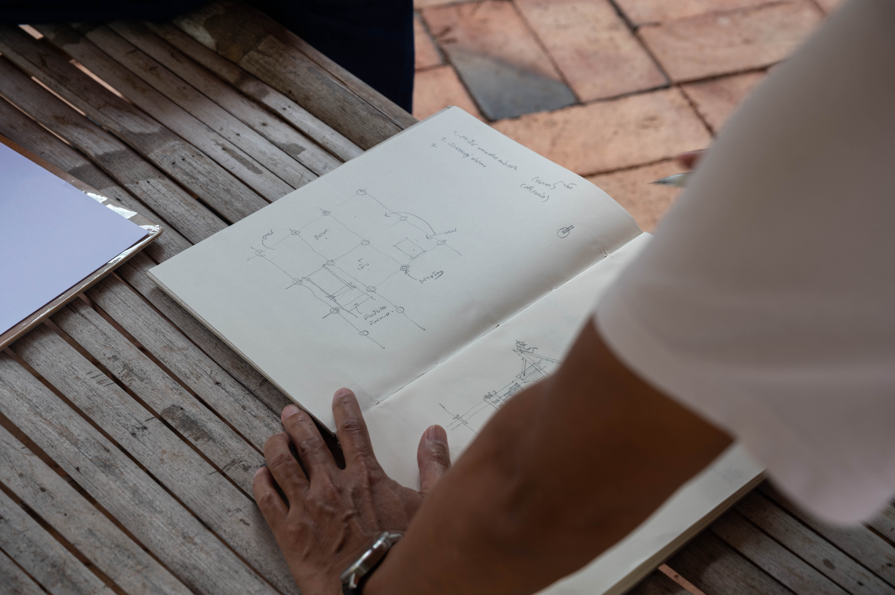
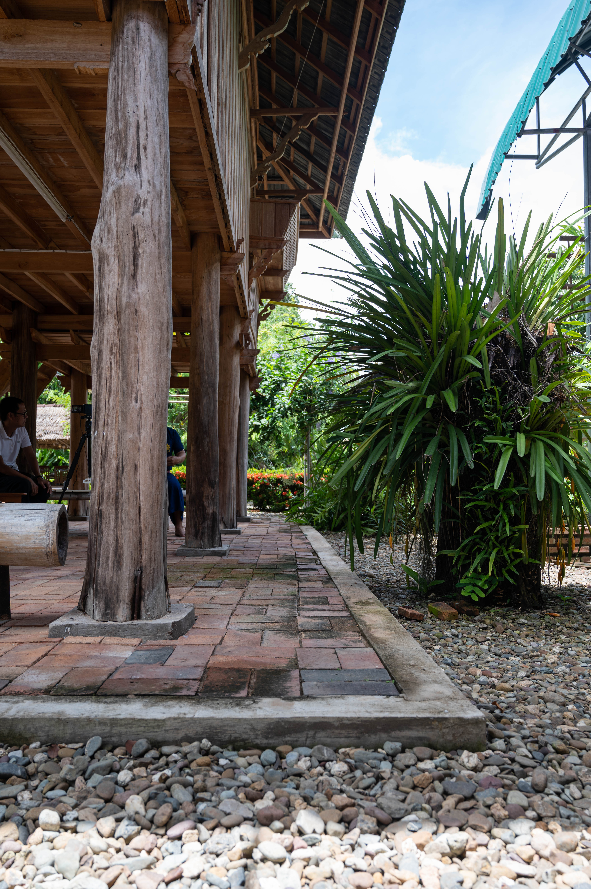
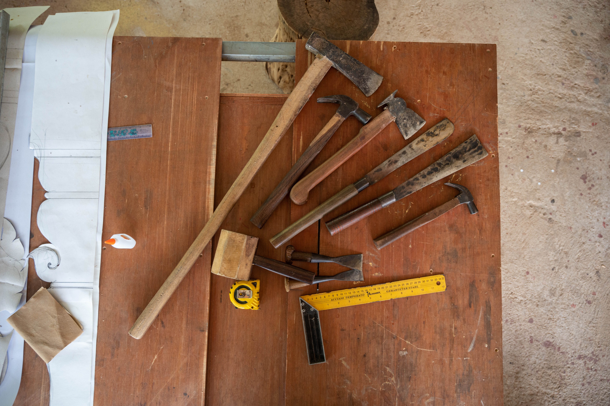

สล่าจิต
นายสมจิต นันทิศ
สล่า-เรือน
จังหวัดน่าน


1.วางหินตำแหน่งเสาเพื่อทราบขนาดของส่วนต่าง ๆเข้ามาดูพื้นที่ และนิมนต์หลวงพ่อมาดูพื้นที่ โดยพื้นที่มีต้นสาละ ต้นสน สอบถามความต้องการของหลวงพ่อว่าอยากได้ขนาดเรือนเท่าไหร่บ้าง และนำลูกหินวางตามพื้น เพื่อแทนตำแหน่งเสา โดยอ้างอิงระยะห่างของแต่ละเสาด้วยตลับเมตร และอ้างอิงตามความเชื่อในการสร้างเรือนแบบล้านนาและแบบไทลื้อ
2.จัดวางตำแหน่งส่วนต่าง ๆ ของเรือนจัดวางตำแหน่งห้อง โดยอ้างอิงตามความต้องการของเจ้าอาวาส ตำแหน่งบันได โดยบางส่วนอ้างอิงจากความเชื่อในการสร้างเรือนแบบล้านนาและแบบไทลื้อ ความเชื่อ-เชิงช่าง : การวางห้องนอน (หัวนอน) ควรวางไว้ทางทิศตะวันออก ห้ามหันหัวบันไดไปทางทิศตะวันออก ห้ามหันหัวบันไดมาชนกัน (หากมีบันไดมากกว่า 1)

3.ถอดขนาดและจำนวนไม้ของทุกส่วนในเรือน เขียนจำนวน ขนาด ไม้ที่จะต้องใช้ในการสร้างเรือนทั้งหมด เพื่อให้เจ้าอาวาสเตรียมวัสดุ โดยนำไม้ไผ่มาอ้างอิงความสูง และขีดระบุตำแหน่ง เพื่อเห็นภาพจริงของความสูงใต้ถุนเรือน ความสูงตัวเรือน ลักษณะหลังคา ตามความต้องการของเจ้าอาวาส โดยหาจากไม้ที่ยาวที่สุดก่อน (เสา, แป) หลังจากนั้นก็หาไม้ที่มีความยาวลดหลั่นลงมา (อะเส, ขือ, คาน(แวง)) นอกจากนั้น ยังต้องคัดเลือกไม้ที่นำมาเป็นเสา โดยเสามงคลและเสานางจะต้องเป็นไม้ที่ดีที่สุด ความเชื่อ-เชิงช่าง : โดยตำแหน่งและจำนวนของเสาอ้างอิงตามความเชื่อในการสร้างเรือนแบบล้านนาและแบบไทลื้อ เรียงลำดับความสวยงามของเสาดังนี้ 1. เสาขวัญ 2. เสานาง 3. เสาเติ๋น 4. เสาหัวคันได (บันได) 5. เสาค้ำ 6. เสาดั้ง 7. เสาฮ้านน้ำ 8. เสาเนื้อเรือน 9. เสาป๊ะหัวคันได1 0. เสาแหล่งหมา เนื่องจากเป็นเสาที่รับโครงสร้างหลังคาเพียงอย่างเดียว ไม่จำเป็นต้องมีความแข็งแรงหรือมีลักษณะตรงสวยงามเท่าต้นอื่น ** หากการนับไม่ถูกโฉลก สามารถนับ เสาฐานบันได เพิ่มเข้าไปเพื่อให้ถูกโฉลกได้ หลังจากได้จำนวน และ ความสูงของเสา สล่าจะ “ต้าวฮ้าง” เพื่อหาองศาการเอียงของหลังคา (จันทัน) ซึ่ง ต้าวฮ้าง คือการทำแบบลักษณะ 1:1 โดยวิธีการนำไม้ไผ่มาอ้างอิงตามระยะระหว่างเสา วางไว้กับพื้น จัดวางไม้ไผ่เพื่อหาระยะของเสาดั้ง จันทัน ตำแหน่งการเจาะเสาของรูยาง ตีนกลอน ความเชื่อ-เชิงช่าง : ไม่มีขนาดหรือสูตรที่ตายตัว โดยเริ่มจากเสาดั้งให้อยู่ส่วนกลางของคานเรือน และใช้สายตามองดู ให้เกิดความสวยงามและความลาดชันที่พอเหมาะ
4.แปรรูปไม้ คัดเลือกไม้ในการแปรรูปส่วนต่าง ๆ โดยมีตัวแปรตาม ขนาด รูปทรง ความสูง ความกว้าง และความหนา โดยสล่าเก๊า เป็นผู้เลือกคัดเลือกเพื่อนำไปแปรรูป หลังจากได้ไม้มาแล้ว ก็จะต้องคำนวณถึงขนาดและปริมาณของวัสดุไม้ใน เรือนทั้งหมด โดยหน้าไม้เรือนหลังนี้อยู่ที่ 2”6 (แวง) โดยมีการสั่งเผื่อออกจากริมเสาประมาณ 20 เซนติเมตร ไม้แปมีลักษณะหนากว่า โดยขนาดหน้าไม้ 2”1/2 กลอน (จันทัน) และตง มีขนาดหน้าไม้ 2”4 พื้นไม้ ขนาด หน้า 6” หนา 1” ความเชื่อ-เชิงช่าง : เลือกไม้สัก เนื่องจากเป็นไม้ที่หาง่ายได้ตามชุมชน มีการปลูกในท้องถิ่นตามหัวไร่ปลายนา ไม่ได้ใช้ประโยชน์อะไร ชาวบ้านจึงนำมาถวายบุญให้แก่วัด บ้างก็เหลือจากการสร้างบ้านเรือนของชาวบ้าน จึงนำถวายมาเป็นแผ่นแก่วัด

5.การวางตอม่อ : ใช้เหล็กเส้นในการยึดฐานตอม่อปูน และ เสาไม้ โดยมีการวางเหล็กเส้นเป็นกากบาท โดยฝากไว้กับตอม่อ นำเสาไม้มาวาง และตอกเหล็กยึดเข้าไป และหล่อตอม่อให้เสมอกับตีนเสาไม้เพื่อให้เกิดความเรียบร้อย ความเชื่อ-เชิงช่าง : เนื่องจากเสาไม้ที่นำมาใช้มีความเป็นธรรมชาติ ที่ไม่สม่ำเสมอกัน การใช้เหล็กเส้นจึงมีความสะดวก และง่ายต่อการติดตั้งมากกว่าเทคนิคหูกระต่าย โดยเกิดจากประสบการณ์การสร้างเรือนไม้จากวัดสวนหอม
6.การเทพื้น : เทคานคอดินประมาณ 15 เซนติเมตร ล้อมรอบพื้นที่ตั้งของตัวเรือน ขุดนำพื้นดินออก นำทรายมาถบทับพื้นที่ ทั้งหมดประมาณ 10 - 15 เซนติเมตร และวางทับด้วยอิฐแดง และเททรายทับอีกครั้ง กวาดเพื่อให้ทรายลงไปในร่อง คล้ายการลงยาแนว ความเชื่อ-เชิงช่าง : ปลวกไม่สามารถเจาะทรายได้ เพราะทรายจะยุบลงเรื่อย ๆ เวลาเจาะทราย และระมัดระวังอย่าให้อิฐแดงโดนน้ำ เนื่องจากตะไคร้ขึ้นแล้วจะลื่น เสี่ยงต่อการเกิดอุบัติเหตุ
7.การตั้งเสา : ทางพื้นถิ่นเรียกว่า “การปกเสา” โดยเรียงลำดับการปกคือ เสาขวัญ เสามงคล และเสานาง ตามด้วย วิธีการของสล่าคือตั้งเสาโดยใช้ไม้ค้ำไว้ และขยับให้รูที่เจาะเพื่อรอยแวงตรงกันทุกต้น หลังจากนั้นรอยแวง รอยขือ รอยอะเส (แป) ตามลำดับ (ไม่ตอกลิ่ม) ใช้เวลาประมาณ 3 วัน ความเชื่อ-เชิงช่าง : เสาทุกต้นจะถูก ออกแบบ และเจาะรูเพื่อรอยแวง รอยขือ หากรูไม่ตรงระหว่างการติดตั้ง จะต้อง “ติดสินบน” คือการที่รูเจาะไว้ไม่ตรงกัน จึงทำให้ต้องขึ้นไปเจาะที่หน้างาน และปิดรูที่ไม่ได้ใช้งานเอาไว้
8.จัดไม้ตง ตอกลิ่ม : จัดวางไม้ตง และตอกลิ่มเพื่อเสริมความมั่นคงของโครงสร้างหลัก
9.ขึ้นเสาดั้ง และวางแปจ๋อง (อกไก่) : โดยการวางแปจ๋อง (4”x4”) บนเสาดั้ง (4”x4”) ในลักษณะการวางของ สี่เหลี่ยมขนมเปียกปูน นำส่วนแหลมวางบนดั้งที่มีการบากเพื่อรับให้พอดี
10.วางกลอน จันทัน ก้านฝ้า
11.วางไม้ยาง (ค้ำยัน) ไม้ก้อนจ้าย (ไม้เชิงชาย) : โดยยึดไว้กับลิ่ม เพื่อเพิ่มความมั่นคง
12.ใส่กาแล (ป้านลม) ตีปิดจั่ว มุงหลังคา : มุงหลังคาทั้งหมด และเก็บรายละเอียดงานหลังคา เช่น ครอบสัน ครอบสันตะเข้ (ครอบปูนปั้น)
13.ติดตั้งลิ่มให้ครบทุกส่วน : ติดตั้งลิ่มเพื่อยึดส่วนประกอบให้มีความแข็งแรง
14.ปูพื้นกระดาน : ปูพื้นกระดานทั้งหมดโดยไม่ตัดหัวตง หลังจากนั้นดึงเอ็นเพื่อเตรียมตัดหัวตง
15.ติดตั้งฝานอก : ติดตั้งโครงฝาและฝา (ผนัง) จัดทำและติดตั้ง ลายฉลุป่อง (คอสอง) ผาไหล (หน้าต่างแบบพื้นถิ่น) วงกบประตู-หน้าต่าง และบานประตูหน้าต่าง
16.ตัดหัวตง : ตัดหัวตง และ ทำและติดตั้งไม้ปิดหัวตง เพื่อรัดฝา (ผนัง) ให้แน่น ยึดส่วนประกอบทั้งหมดด้วยลิ่ม
17.ติดตั้งส่วนประดับตกแต่งภายใน : ไม้คิ้ว ติดตั้งลิ่ม และ ติดตั้งฝาใน : ติดตั้งโครงฝาและฝา (ผนัง) ส่วนในเรือน
18.ติดตั้งรั้วควาย (ระแนงหน้าจั่ว) : ติดตั้งรั้วควาย (ระแนงจั่วด้านใน)
19.ติดตั้งบันได : ติดตั้งบันไดและราวบันได
20.ติดตั้งส่วนประดับตกแต่งภายนอก : ฮ้านน้ำ
เครื่องมือและอุปกรณ์
